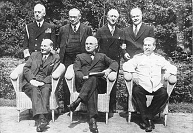

🏛️ Conferencia de Potsdam
Última reunión de los líderes aliados (Truman, Stalin, Churchill/Attlee) que marca el fin de la Segunda Guerra Mundial y el inicio de las tensiones Este-Oeste.

1945 - 1991 | El conflicto que definió el siglo XX
Última reunión de los líderes aliados (Truman, Stalin, Churchill/Attlee) que marca el fin de la Segunda Guerra Mundial y el inicio de las tensiones Este-Oeste.
Política exterior estadounidense para contener la expansión del comunismo soviético. Marca el inicio oficial de la Guerra Fría con ayuda económica y militar a naciones amenazadas.
Programa de reconstrucción económica europea con $13 mil millones de ayuda estadounidense. Buscaba frenar la influencia soviética mediante la recuperación económica.
Tratado del Atlántico Norte: alianza militar entre EE.UU., Canadá y países de Europa Occidental. Principio de defensa colectiva contra la amenaza soviética.

Respuesta soviética a la OTAN. Alianza militar de los países del bloque comunista de Europa del Este bajo el liderazgo de la URSS.
Corea (1950-53): Primera guerra caliente. Vietnam (1955-75): Derrota estadounidense. Cuba (1962): Crisis de los misiles. Afganistán (1979-89): El "Vietnam soviético".
Competencia tecnológica y científica. 1957: Sputnik soviético. 1961: Gagarin, primer humano en el espacio. 1969: Apollo 11, el hombre llega a la Luna.
Símbolo de la división de Alemania y Europa desde 1961. Su caída marca el principio del fin de la Guerra Fría y la reunificación alemana.

Disolución oficial de la Unión Soviética. Fin de 69 años de estado comunista y conclusión definitiva de la Guerra Fría. Nacen 15 repúblicas independientes.
★ La Guerra Fría transformó el mundo y definió las relaciones internacionales del siglo XX ☭